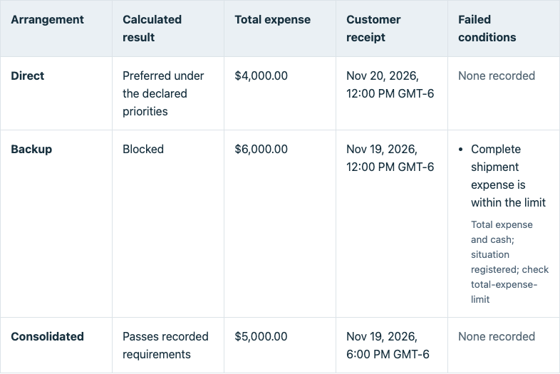
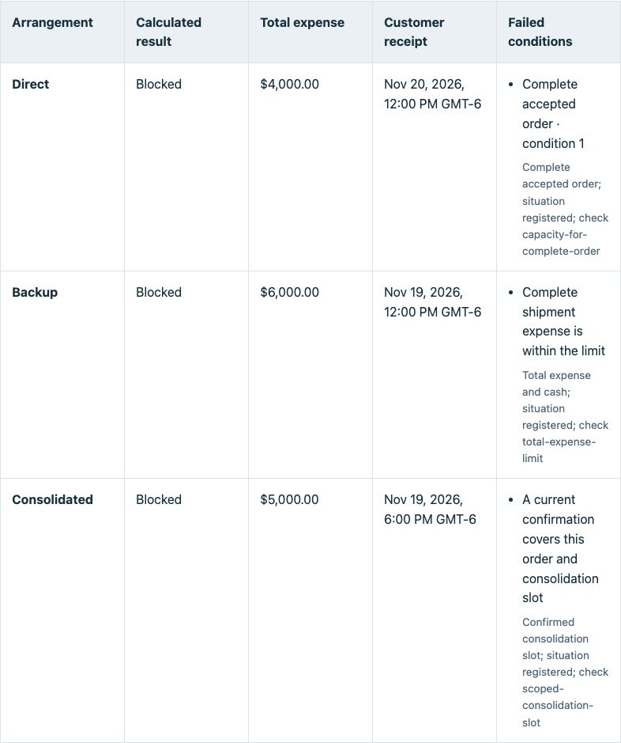
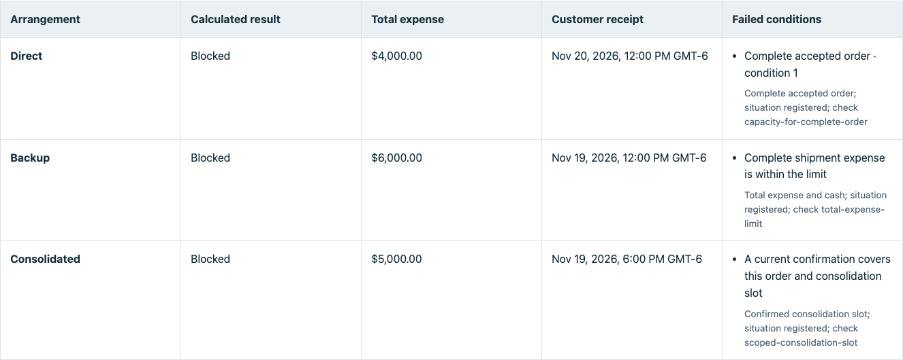

Maya has several accepted orders to deliver before Friday’s launch. Overnight, purchase orders were revised, carrier quotes were refreshed and consolidation records changed. Launch wants the goods on time. Finance expects her to avoid an unnecessary premium. Operations needs a plan it can actually support for the order being shipped.
Her problem is bigger than recalculating prices: which proposals still stand, which need intervention, and how long does each owner have to act? A correct review that reaches the coordinator after the booking cutoff is too late.
A developer brings the shipment review into the company’s existing export process. The CLI assesses each supplied shipment, the SDK compares retained findings, and the resulting queue includes a portable operating review that Maya can continue in her team’s reservation desk.
Maya, the four independent shipments and all operating records are fictional. This story uses the shipping sample repository; selected excerpts link to the verified public revision. Sources and scope are at the end.
The same review. Different work for the owner.
Shared basis. The same cost-first shipment app and 8 a.m. assessment clock. Each independently allocated shipment needs 100 units by the original receiving deadline within a $5,000 expense limit.
What changes. These are different shipments, not a single-field experiment: ORD-104 stays at revision 1 with complete support; ORD-105 is revision 2, Direct capacity is 99 and its Consolidated confirmation remains revision 1.
A · ORD-104 retains complete support
Review and reserve Direct · $4,000
- Shipment and owner
- SHIP-104 · Maya Chen
- Current scope
- Order revision 1; current confirmation and permissions


Maya checks the retained basis and passes the supported proposal to the responsible owner before Direct’s 11 a.m. carrier cutoff.
B · ORD-105 has unresolved revision-2 support
Obtain current confirmation or escalate · No arrangement passes
- Shipment and owner
- SHIP-105 · Maya Chen; carrier coordinator obtains slot
- Material exceptions
- Direct: 99 of 100 units; Consolidated confirmation: revision 1


The carrier coordinator must obtain actual support for revision 2. Maya cannot advance yesterday’s proposal as the current recommendation.
What this means for the decision. A batch review helps the owner distinguish work that can advance from work needing a specific intervention. The complete queue also separates old permissions and malformed source inputs.
Maya can advance ORD-104 toward reservation after checking its current basis. ORD-105 needs the carrier coordinator to obtain a confirmation for revision 2 or escalate another response. These are two independent shipment contexts, with different identities, revisions, capacities and supporting records. The report does not attribute their different results to one isolated field.
The queue makes the intervention visible before showing the integration code. It leads with the answer and next intervention, then a compact arrangement comparison; the retained reports supply the supporting detail. This HTML queue is the company integration’s report, rather than a screenshot of every field in the complete CLI output. Complete current inputs and source receipts remain attached to each case, so its owner can inspect the reason for acting.
What repeats is the bounded shipment commitment decision pattern: assess complete arrangements against requirements, compare those that pass under the agreed priority and let the responsible people commit. Each shipment supplies its own facts and receives its own finding. These cases stipulate independent resource allocations; four individual reviews cannot establish that one shared truck, dock or cash pool can serve the whole batch.
Separate a supported proposal from a blocker or input error.
The baseline prefers Direct for each shipment. At the same 8 a.m. review time, the morning snapshot produces these outcomes:
| Shipment | Recorded situation | Current result | Next intervention |
|---|---|---|---|
| SHIP-104 | Relevant records remain unchanged. | Direct remains preferred: $4,000, Friday at noon. | Review the current basis and reserve before Direct’s 11 a.m. cutoff. |
| SHIP-105 | Revision 2 needs 100 units; Direct’s quote has capacity for 99. Consolidated’s confirmation covers revision 1. | No listed arrangement passes. Backup also exceeds the expense limit. | The carrier coordinator must obtain a genuine current slot confirmation or Maya must revise or escalate the commitment. |
| SHIP-106 | The order is revision 2; its permissions still cover revision 1. | No listed arrangement passes. | Obtain the appropriate current authority and release records. |
| SHIP-107 | A quote specifies EUR; the importer supports USD. | Input correction required; no new assessment. | Correct the source information before reassessment. |
The distinction changes the work. A blocked assessment identifies requirements that the recorded arrangements fail. An import problem prevents a supported calculation. An interrupted calculation establishes neither a current recommendation nor that every arrangement is blocked.
See the complete generated exception queue


What could the team do instead?
For four shipments, Maya could inspect every record manually. That can work when the volume is small and someone owns the complete check. Repeated revisions make the harder task keeping each recommendation attached to the exact records and rules that supported it.
| Approach | What the team maintains |
|---|---|
| Manual review or a workbook | Reconcile the records, repeat the requirements checks and retain the reviewed basis for each proposal. |
| A company-specific script | Automate ingestion and calculation, with its own requirements, ranking, comparison and review-history contracts. |
| A script around the Decision Lab CLI | Keep company mappings and reporting while reusing the published shipment assessment and a native workflow that its owner can continue. |
The developer chooses the third approach because the team already has a reviewed shipment model. The integration still needs trustworthy exports, correct mappings and a human handoff; the CLI supplies a repeatable assessment rather than those company processes.
A shared reference: screen, intervene, retain the handoff.
- Company systems and developerPrepare current records.Preserve original scope, quote validity, cutoffs and each shipment’s complete retained basis.
- CLI and company integrationFind what needs attention.Assess the supplied shipments, compare findings and retain an operating review for each calculated case.
- Maya and responsible ownersContinue the same case.Review the facts, obtain actual replacement records and record the decision and its operating evidence separately.
Hermod authored the operating workflow that puts this decision approach into practice and configured the pinned app’s supporting reasoning about shipment requirements and preference. The developer supplies company mappings, batch handling, comparisons and reporting. The workflow retains the questions, reviews and operating history; its authored checks also examine support for completion. An arrangement is a complete combination of the selected freight option, preparation, people and supporting records that the app checks together.
Current authored workflow views can present a focused answer, compact comparison and expandable support from the same retained output. Inspection stays separate from accepted answers, business choices and authorizations; complete CLI report data and review history remain available.
Meet the promise before paying for earliness.
The earlier authoring example explored an arrival-first priority. This operating example publishes a separate cost-first app: lowest complete expense among arrangements meeting every mandatory requirement, then arrival. Its original arrival-first release remains archived.
For unchanged SHIP-104 and the baseline cases at 8 a.m., Direct meets the Friday delivery promise for $4,000. Consolidated arrives Thursday at 6 p.m. for $5,000; Backup arrives Thursday at noon for $6,000. With a $5,000 expense limit, Direct is preferred, Consolidated is feasible and Backup is blocked. Earlier arrival alone does not justify the extra $1,000 under this policy.
Each quote also has a booking cutoff. Direct closes at 11 a.m.; Consolidated remains available until noon if its supporting records still pass. At 11:30, unchanged prices can lead to a different proposal. The CLI’s explicit assessment time advances the business review; changing artifact creation metadata does not.
Compare the same shipment at 8 a.m. and 11:30 side by side. Only the assessment-time control changes in that separate clock comparison; the policy and records stay fixed.
The comparison remains a pre-booking decision. Expiration of an offer does not cancel freight already reserved under its contractual evidence.
Map company exports without rewriting evidence.
The integration reads complete current snapshots of orders.csv, quotes.csv and slot-confirmations.csv. The order snapshot supplies identity, revision, quantity, limits, review time, delivery windows and the responsible owner:
shipment_id,order_id,order_revision,quantity,currency,expense_limit
SHIP-104,ORD-104,1,100,USD,5000.00
SHIP-105,ORD-105,2,100,USD,5000.00
SHIP-106,ORD-106,2,100,USD,5000.00The quote contains more than a price. Its original order scope, reference and revision, knowledge time, validity and individual booking cutoff matter. Here the $4,000 Direct quote for SHIP-105 cannot carry the complete order:
shipment_id,order_revision,arrangement,total_cost,capacity,booking_cutoff_at
SHIP-105,2,direct,4000.00,99,2026-11-17T11:00:00-06:00
SHIP-105,2,backup,6000.00,100,2026-11-17T12:00:00-06:00
SHIP-105,2,consolidated,5000.00,100,2026-11-17T12:00:00-06:00The confirmed slot still identifies the earlier order revision:
shipment_id,order_id,order_revision,arrangement,slot_reference,status
SHIP-104,ORD-104,1,consolidated,SLOT-C104,confirmed
SHIP-105,ORD-105,1,consolidated,SLOT-C105,confirmed
SHIP-106,ORD-106,1,consolidated,SLOT-C106,confirmedA confirmed record for revision 1 does not establish support for revision 2. The importer preserves it. Copying the new order revision onto an old confirmation or grant would manufacture evidence.
This mapping applies ontology engineering: preserve the identities, units and relationships the decision depends on. An order revision, a quote for that revision and a confirmation covering it are distinct records with explicit connections. Company column names may differ; the importer must preserve what each record actually refers to rather than make its fields resemble the latest order.
Each shipment also needs its retained case: registration, readiness, resources, calendars and permissions. Three CSV files supplement that complete basis. The importer replaces only the fields it owns:
job.caseData = structuredClone(retainedCase);
job.caseData.parameters = { ...job.caseData.parameters, ...parameters };
job.caseData.tables.arrangements = arrangements;
job.caseData.tables.slotConfirmations = slotConfirmations;These exports are snapshots, not event patches. A missing slot leaves no current confirmation; an order absent from the export has no current assessment. Currency, timestamp, duplicate-record and scope diagnostics remain visible. The source system must reconcile amendments and cancellations into current records before supplying them.
Repeat the review and inspect its actual outcome.
The app is shipment-exception-response, release 1, with the cost-first policy and explicit carrier-offer requirements. The script binds prepared cases to that immutable package and validates each case before invoking the public CLI:
const args = ['run', '--app', appFile, '--case', caseFile, '--reports', 'all', '--locale', 'en-US',
'--timeout-ms', String(options.timeoutMs ?? 30000), '--max-output-bytes', '50000000',
'--run-id', `batch-${job.shipmentId}`, '--created-at', createdAt, '--output', path.join(directory, 'run.json')];
if (options.maxPlans !== undefined) args.push('--max-plans', String(options.maxPlans));
const evaluated = await invokeCLI(args, transcript);invokeCLI wraps the public runCLI entry point from @decision-lab/cli. The script supplies the company’s sequence and records; it supplies no independent shipment evaluator.
Command completion is separate from a supported business finding. Exit zero can accompany a complete assessment with no feasible arrangement. The integration also requires a usable retained result:
if (evaluated.exitCode !== CLI_EXIT_CODE.COMPLETED || !row.current?.available) {
row.status = evaluated.exitCode === CLI_EXIT_CODE.INVALID_INPUT ? BATCH_STATUS.INPUT_ERROR : BATCH_STATUS.UNAVAILABLE;
if (evaluated.exitCode === CLI_EXIT_CODE.OPERATIONAL_ERROR) row.failureKind = 'operational';
row.diagnostics.push(...(row.current?.issues?.map(message => ({ code: 'ASSESSMENT_UNAVAILABLE', message })) ?? diagnostics(evaluated, 'CLI_RUN_FAILED')));The report reader then checks completed execution and report-completeness metadata:
assert(run.execution?.status === EXECUTION_STATUS.COMPLETED, `The assessment did not complete (${text(run.execution?.status) || 'unknown execution status'}).`);
const report = run.report;
assert(report?.format === 'decision-lab-report/1', 'The run has no complete retained report.');
const completeness = report.completeness;
assert(inspectReportCompleteness(report).complete, 'The retained report is incomplete or truncated.');The report adapter checks execution, complete retained reports, app and input identity, assessment coverage and consistency across its normalized tables. A limited search might retain a fully checked feasible witness while coverage or preference remains unestablished; that cannot provide this queue’s ranked proposal. The SDK desk resolves the native assessment before using its completion, witness and preference helpers.
Show what changed in the decision.
A changed source field matters when it affects feasible responses, the preferred arrangements, expenses, timing or blockers. The integration now asks the SDK to compare the retained findings:
row.findingChanges = lab.reports.compareFindings({ before: previous.get(job.shipmentId).run, after: run });The comparison preserves primary-key record differences alongside changes in feasibility, preference and required follow-up. It does not attribute causality to an individual changed field. The CLI also exposes this service through changes. It compares retained calculations; it does not assess new records or authenticate them.
The company queue still distinguishes an unchanged proposal, changed conditions, changed recommendation, blocked review, input error and unavailable result. Those are company-facing queue outcomes, separate from CLI execution status. Every calculated row remains provisional until its owner reviews it.
The baseline is a comparison input rather than a cache. Every supplied order is reassessed; a baseline from different app rules is rejected. HTML tables use the shared RecordsView; the CSV is a separate company export. Complete native reports remain available for inspection.
Pass the same operating review to Maya.
For each calculated shipment, the batch retains review.json. This is a native workflow continuation containing the exact shipment inputs, app and workflow versions, owner, source receipts, provisional screening and prior finding when present:
const review = createReviewJourney({ lab, app: openedApp, inputs: job.caseData,
definition,
owner: job.owner, sources: receipts.filter(receipt => job.sourceFiles.includes(receipt.file)),
screeningRun, previousRun: previous.get(job.shipmentId)?.run ?? null, createdAt,
runId: `shipment-${job.shipmentId}-${createdAt.replace(/[^0-9]/g, '')}` });
await writeFile(path.join(directory, 'review.json'), json(review));Imported facts await review. A calculation is not silently accepted, and screening does not record a carrier booking. Maya opens that exact file in the reservation desk, reviews the records and continues its history instead of recreating the shipment in another application.
The return path matters too. A continuation exported from the desk can return to the CLI without old CSVs overwriting newly received records. Reopening a current retained finding preserves it; a changed premise requires fresh review and reassessment. An unchanged booking is not discarded by calculating the same basis again.
This is hierarchical decomposition at the handoff: Maya’s delivery question depends on narrower findings about capacity, permission, confirmation and timing. A changed answer can make a dependent finding stale, so its earlier support must be reviewed and reassessed before the larger decision relies on it. The continuation keeps those dependencies and history together; it does not convert an old acceptance into acceptance of the changed case.
Close the exception against the original promise.
Maya now has an actionable queue. SHIP-104 has a lower-cost opportunity with an 11 a.m. booking deadline. SHIP-105 needs a current Consolidated confirmation because Direct cannot carry the revision. SHIP-106 needs current permission; SHIP-107 needs corrected source data.
In the continuation, the owner separately records reviewed facts, acceptance of the assessment, a chosen response and the external operating records. A reservation alone cannot establish delivery. Escalating or revising the customer promise does not fulfill the original commitment.
Next: the carrier sends a new confirmation for ORD-105 revision 2. Follow the same case into the Shipment Reservation Desk, from a blocked review through a supported choice, a sourced booking and the records that support completion.
The full repository directory contains the importer, comparison, native handoff, continuation and report implementation. The short excerpts above select the calls relevant to Maya’s work.